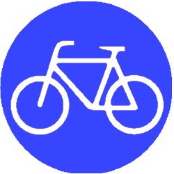

<!DOCTYPE html>
<html>
<head>
	<meta charset="utf-8" />
	<meta name="viewport" content="width=device-width, initial-scale=1.0, maximum-scale=1.0, user-scalable=no" />

	<title>Belfast Bicycle Infrastructure (November 2015)</title>
	<link rel="stylesheet" href="http://cdn.leafletjs.com/leaflet-0.7.5/leaflet.css" />
	<script src="http://cdn.leafletjs.com/leaflet-0.7.5/leaflet.js"></script>
	<script type="text/javascript" src="http://maps.stamen.com/js/tile.stamen.js?v1.3.0"></script>
	<link rel="stylesheet" href="css/Leaflet.EditInOSM.css" />
	<link rel="stylesheet" href="css/bikemap.css" />
	<script src="src/Leaflet.EditInOSM.js"></script>
	<script src="data/belfastbikes.geojson" type="text/javascript"></script>
	<script src="data/onseg.geojson" type="text/javascript"></script>
	<script src="data/onshare.geojson" type="text/javascript"></script>
	<script src="data/offseg.geojson" type="text/javascript"></script>
	<script src="data/offshare.geojson" type="text/javascript"></script>
	<script src="data/proposed.geojson" type="text/javascript"></script>
	
 <style>
	body {
		padding: 0;
		margin: 0;
	}
	html, body, #map {
		height: 100%;
	}
		
</style>

</head>

<body>
  	<div id="map"></div>

	<script>
	
	function getColor(r) {
    return r > 1000 ? '#800026' :
           r > 800  ? '#BD0026' :
           r > 600  ? '#E31A1C' :
           r > 400  ? '#FC4E2A' :
           r > 200  ? '#FD8D3C' :
					  '#FEB24C' ;
	}
	
	function stationStyle(feature) {
    return {
        fillColor: getColor(feature.properties.RentalsAugust),
        weight: 1,
        opacity: 1,
        color: 'white',
        fillOpacity: 0.7
		};
	}
	
	
// Load Mapbox as tile baselayer
  	var mapbox = L.tileLayer('https://api.tiles.mapbox.com/v4/{id}/{z}/{x}/{y}.png?access_token={accessToken}', {
    		attribution: 'Map data &copy; <a href="http://openstreetmap.org">OpenStreetMap</a> contributors, <a href="http://creativecommons.org/licenses/by-sa/2.0/">CC-BY-SA</a>, Imagery © <a href="http://mapbox.com">Mapbox</a>',
		maxZoom: 18,
		id: 'mapbox.emerald',
		accessToken: 'pk.eyJ1IjoiYm9iaGFycGVyIiwiYSI6ImQwOTg1YTg2MTQzYzk3Mzc5MWVjYzFkZDQzN2M1NTUzIn0.mA2WO4WAZzh-qwoqN4QVjg'
	});	
	
	var off_segregated = {
		"color": "green",
		"weight": 5,
		"opacity": 0.8
	};
	
	var off_shared = {
		"color": "green",
		"dashArray": "3,10",
		"weight": 5,
		"opacity": 0.8
	};
	
	var on_segregated = {
		"color": "blue",
		"weight": 5,
		"opacity": 0.8
	};
	
	var on_shared = {
		"color": "blue",
		"dashArray": "3,10",
		"weight": 5,
		"opacity": 0.8
	};
	
	var proposal = {
		"color": "red",
		"dashArray": "3,10",
		"weight": 5,
		"opacity": 0.8
	};
	
	function onEachFeature(feature, layer) {
		if (feature.properties.layertype == 'offseg'){
			layer.bindPopup(feature.properties.name + "<br>This section: <b>off-road segregated cycleway</b>");
			}
		if (feature.properties.layertype == 'offshare') {
			layer.bindPopup(feature.properties.name + "<br>This section: <b>off-road shared path</b>");
			}
		if (feature.properties.layertype == 'onseg') {
			layer.bindPopup(feature.properties.name + "<br>This section: <b>on-road mandatory lane</b>");
			}
		if (feature.properties.layertype == 'onshare') {
			layer.bindPopup(feature.properties.name + "<br>This section: <b>on-road advisory lane</b>");
			}
		if (feature.properties.layertype == 'proposed') {
			layer.bindPopup("Proposed additions to the city centre network");
			}
		}
	
	var offsegL = L.geoJson(offseg, {style: off_segregated, 
		onEachFeature: onEachFeature
	});
	
	var offshareL = L.geoJson(offshare, {style: off_shared, 
		onEachFeature: onEachFeature
	});
	
	var onsegL = L.geoJson(onseg, {style: on_segregated, 
		onEachFeature: onEachFeature
	});
	
	var onshareL = L.geoJson(onshare, {style: on_shared, 
		onEachFeature: onEachFeature
	});
	
	var proposedL = L.geoJson(proposed, {style: proposal,
		onEachFeature: onEachFeature
	});
	
  
    var lanesOverlay = {
		" Off-road segregated paths": offsegL,
		" Off-road shared paths": offshareL,
		" On-road mandatory lanes": onsegL,
		" On-road advisory lanes": onshareL,
	};
	
	var proposedOverlay = {
		" Proposed additions": proposedL,
	};
  
  	var bikestations = L.geoJson(bikestations, {
	style: stationStyle,
	pointToLayer: function (feature, latlng) {
        return L.circleMarker(latlng);
		},
	onEachFeature: function (feature, layer) {
		layer.bindPopup("Belfast Bikes: ".bold() + "<br>" + feature.properties.Name + "<br><strong>August Rentals~ </strong>" + feature.properties.RentalsAugust +
		"<p><a href='http://www.belfastbikes.co.uk/en/belfast/'><strong>Visit Belfast Bikes</strong></a></p>").setContent;
		}
	});
	
	var map = L.map('map', {
		layers: [mapbox, offsegL, offshareL, onsegL, onshareL, bikestations], 
		editInOSMControlOptions: {position: "bottomright", zoomThreshold: 13},
		zoomControl: false
	}).setView([54.6, -5.93],14);
	
	var bikeIcon = L.icon({iconUrl: 'images/newbike.png', iconSize: [35, 35]});
	
	L.marker([54.6058, -5.911], {icon: bikeIcon, opacity: 0.7}).addTo(map).bindPopup("New Belfast Bikes dock".bold() + "<br>" + "Titanic Qtr / Queen's Road");
	L.marker([54.584, -5.932], {icon: bikeIcon, opacity: 0.7}).addTo(map).bindPopup("New Belfast Bikes dock".bold() + "<br>" + "Queen's / College Park");
	L.marker([54.5844, -5.937], {icon: bikeIcon, opacity: 0.7}).addTo(map).bindPopup("New Belfast Bikes dock".bold() + "<br>" + "Queen's / University Road");
	
	var legend = L.control({position: 'bottomleft'});
	
	legend.onAdd = function (map) {
    var div = L.DomUtil.create('div', 'info legend'),
        grades = [0, 200, 400, 600, 800, 1000],
		labels = [];
		div.innerHTML += '<b>Belfast Bikes: dock locations <br>and August rental numbers</b><br>  New stations<br>'
    for (var i = 0; i < grades.length; i++) {
        div.innerHTML +=
            '<i class="circle" style="background:' + getColor(grades[i] + 1) + '"></i> ' +
            grades[i] + (grades[i + 1] ? '&ndash;' + grades[i + 1] + '<br>' : '+');
		}
    return div;
	};
	
	legend.addTo(map);
	
	L.control.layers(null, proposedOverlay, { 	
		collapsed: false,
		position: 'bottomleft'
	}).addTo(map);	
	
	L.control.layers(null, lanesOverlay, { 	
		collapsed: false,
		position: 'bottomleft',
	}).addTo(map);
	
	var title = new (L.Control.extend({
						options: { position: 'topleft' }
					}));
				
	title.onAdd = function (map) {
					this._div = L.DomUtil.create('div', 'my-custom-control'); 
					this.update();
					return this._div;
					};
			  
	title.update = function (html) {
					this._div.innerHTML = html;
					};

	title.addTo(map);


	var titlehtml = "Belfast's cycle lane infrastructure";
	title.update(titlehtml);
	
	L.control.zoom({position: 'topleft'}).addTo(map);
	
</script>  

</body>
</html>